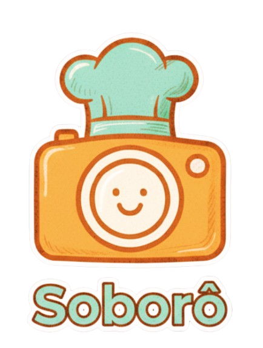

Seu assistente para criar magia com os ingredientes que você tem em mãos.
Texto Transcrito:
Analisando...
Receitas Sugeridas
Ingredientes informados (áudio):
Seu assistente para criar magia com os ingredientes que você tem em mãos.
Texto Transcrito:
Analisando...
Ingredientes informados (áudio):